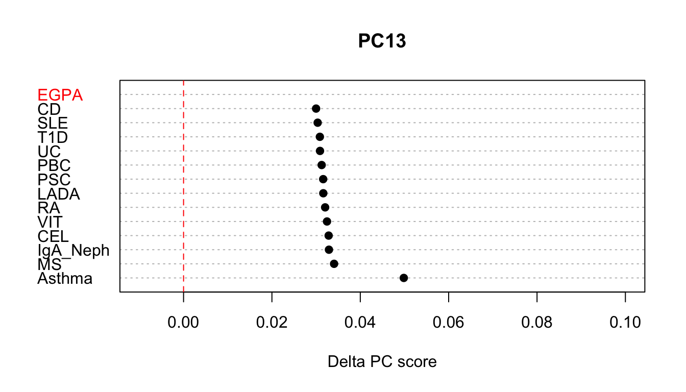

project-basis.Rmd## Loading required package: data.tableThis vignette shows you how to project summary GWAS statistics from your study onto a prexisting basis. As part of the paper we created a basis from 13 immune-mediated diseases, this basis is sparse and contains only a few 100 SNPs. In fact the loading matrix is so small that we have bundled it with this package allowing you to conduct your own analysis.
To illustrate this process we will use a cut down set of variants for summary statistics from Lyons et al. Nat Commun 10, 5120 (2019) “Genome-wide association study of eosinophilic granulomatosis with polyangiitis reveals genomic loci stratified by ANCA status”.
First we load the data and see what we have:
## CHR BP a1 a2 or seb p.value
## 1: 1 1239953 A G 0.9540296 0.13277346 0.52
## 2: 1 1744812 A G 1.1077122 0.21219596 0.52
## 3: 1 2513216 C T 1.0773496 0.05533328 0.59
## 4: 1 2526746 G A 0.9825316 0.05751922 0.86
## 5: 1 2709164 C A 1.0052302 0.05851229 0.74
## 6: 1 4698559 C T 0.9576941 0.07558322 0.44
## 7: 1 5723376 G A 0.9942471 0.05814479 0.71
## 8: 1 6548056 G A 0.9044554 0.08667750 0.17
## 9: 1 8180210 G A 1.0756336 0.07048286 0.33
## 10: 1 8469789 C T 0.9891649 0.06197632 0.81Next let’s load in the basis as used in Burren et al. whilst many objects are loaded for data preprocessing we are most interested in the manifest file.
## pid ref_a1 ref_a2 ref_a1.af ld.block chr
## 1: 10:101291593 T C 0.480825 1984 10
## 2: 10:112186148 C T 0.648373 1992 10
## 3: 10:115481018 C T 0.744380 1997 10
## 4: 10:131562993 G T 0.862206 2029 10
## 5: 10:27177245 A G 0.865380 1913 10
## 6: 10:30802799 A C 0.752050 1918 10
## 7: 10:33426147 T C 0.616504 1920 10
## 8: 10:35359619 A G 0.658291 1923 10
## 9: 10:59893930 C T 0.695451 1940 10
## 10: 10:6087295 G T 0.770167 1875 10The first job is to work out the intersect between the egpa data and the SNPs that we wish to include in the basis.
#first add a pid column to the egpa dataset
lyons_egpa[,pid:=paste(CHR,BP,sep=':')]
# check to see whether there are manifest SNPs missing
M <- merge(SNP.manifest,lyons_egpa,by='pid')
# in this case there are no missing values.
M[is.na(or),]## Empty data.table (0 rows and 13 cols): pid,ref_a1,ref_a2,ref_a1.af,ld.block,chr...In this particular example there are are no missing values, if you find that over 5% of values are missing you might wish to consider imputing missing values either by going back and imputing your GWAS or using a tool such as ssimp. The next task is to harmonise OR so that both basis and EGPA datasets are with respect to the same allele. Please note that for the lyons_egpa dataset allele 1 (a1) is the effect allele, for your dataset this might be different in which case you will need to flip when alleles match the manifest file (rather than when they are discordant as is shown below).
M[,flip_allele:=NA][]## pid ref_a1 ref_a2 ref_a1.af ld.block chr CHR BP a1 a2
## 1: 10:101291593 T C 0.480825 1984 10 10 101291593 T C
## 2: 10:112186148 C T 0.648373 1992 10 10 112186148 C T
## 3: 10:115481018 C T 0.744380 1997 10 10 115481018 T C
## 4: 10:131562993 G T 0.862206 2029 10 10 131562993 G T
## 5: 10:27177245 A G 0.865380 1913 10 10 27177245 A G
## ---
## 479: 9:5455732 T G 0.747554 1716 9 9 5455732 G T
## 480: 9:6161686 C T 0.574054 1717 9 9 6161686 C T
## 481: 9:6163823 G A 0.573922 1717 9 9 6163823 G A
## 482: 9:92321289 A G 0.745041 1794 9 9 92321289 A G
## 483: 9:93563536 A G 0.801111 1796 9 9 93563536 A G
## or seb p.value flip_allele
## 1: 0.8596157 0.05486505 0.0036 NA
## 2: 1.0434465 0.05911730 0.6000 NA
## 3: 0.9997357 0.06289752 0.7800 NA
## 4: 0.9845815 0.08011694 0.9800 NA
## 5: 1.0164064 0.08043653 0.8200 NA
## ---
## 479: 1.0846591 0.06255629 0.3200 NA
## 480: 0.9448833 0.05638120 0.2900 NA
## 481: 0.9445537 0.05623896 0.2900 NA
## 482: 1.0734127 0.06206261 0.5500 NA
## 483: 0.9686060 0.06904879 0.7400 NA## in this case if we need do nothing as these are already aligned
M[ref_a1==a1 & ref_a2==a2,flip_allele:=FALSE]
## in this case the effect allele is the wrong way around and so we need to flip
M[ref_a1==a2 & ref_a2==a1,flip_allele:=TRUE][,c('a1','a2','or'):=list(a2,a1,1/or)][]## pid ref_a1 ref_a2 ref_a1.af ld.block chr CHR BP a1 a2
## 1: 10:101291593 T C 0.480825 1984 10 10 101291593 C T
## 2: 10:112186148 C T 0.648373 1992 10 10 112186148 T C
## 3: 10:115481018 C T 0.744380 1997 10 10 115481018 C T
## 4: 10:131562993 G T 0.862206 2029 10 10 131562993 T G
## 5: 10:27177245 A G 0.865380 1913 10 10 27177245 G A
## ---
## 479: 9:5455732 T G 0.747554 1716 9 9 5455732 T G
## 480: 9:6161686 C T 0.574054 1717 9 9 6161686 T C
## 481: 9:6163823 G A 0.573922 1717 9 9 6163823 A G
## 482: 9:92321289 A G 0.745041 1794 9 9 92321289 G A
## 483: 9:93563536 A G 0.801111 1796 9 9 93563536 G A
## or seb p.value flip_allele
## 1: 1.1633106 0.05486505 0.0036 FALSE
## 2: 0.9583625 0.05911730 0.6000 FALSE
## 3: 1.0002644 0.06289752 0.7800 TRUE
## 4: 1.0156599 0.08011694 0.9800 FALSE
## 5: 0.9838584 0.08043653 0.8200 FALSE
## ---
## 479: 0.9219487 0.06255629 0.3200 TRUE
## 480: 1.0583317 0.05638120 0.2900 FALSE
## 481: 1.0587010 0.05623896 0.2900 FALSE
## 482: 0.9316081 0.06206261 0.5500 FALSE
## 483: 1.0324116 0.06904879 0.7400 FALSEIn this simple case the alleles were easy to align however in you dataset things will probably be different and it is worth considering using something such as annotSnpStats that has more sophisticated routines for aligning alleles. Here is some example code:
library(annotSnpStats) #see https://github.com/chr1swallace/annotSnpStats
alleles <- data.table(pid=M$pid,al.x = paste(M$ref_a1,M$ref_a2,sep='/'),al.y=paste(M$a1,M$a2,sep='/'))
align.class <- rep('match',nrow(alleles))
idx<-which(alleles$al.x!=alleles$al.y)
x.alleles <- alleles[idx,]$al.x
names(x.alleles)<-alleles[idx,]$pid
y.alleles <- alleles[idx,]$al.y
names(y.alleles)<-names(x.alleles)
align.class[idx] <- g.class(x.alleles,y.alleles)
print(table(align.class))
alleles[,g.class:=align.class]
idx<-which(alleles$g.class=='impossible')
if(length(idx) >0){
M <- M[-idx,]
alleles <- alleles[-idx,]
}
M <- merge(M,alleles[,.(pid,g.class)],by='pid',all.x=TRUE)
M <- M[!duplicated(pid),]
M <- M[g.class=='match',or:=1/or]We convert odds ratio estimates to the log odds ratio scale and use the cupcake function project_sparse to project the dataset.
proj.dt <- cupcake::project_sparse(beta=log(M$or),seb=M$seb,pids=M$pid)[,trait:='EGPA'][]## Warning in cupcake::project_sparse(beta = log(M$or), seb = M$seb, pids = M$pid):
## more than 5% sparse basis snps missingOverall we can see that this trait is significant as 2.254018210^{-10}, 2.254018210^{-10}, 2.254018210^{-10}, 2.254018210^{-10}, 2.254018210^{-10}, 2.254018210^{-10}, 2.254018210^{-10}, 2.254018210^{-10}, 2.254018210^{-10}, 2.254018210^{-10}, 2.254018210^{-10}, 2.254018210^{-10}, 2.254018210^{-10} We can check to see if which of the components differ significantly from control as follows:
proj.dt[p<0.05/.N,][]## PC proj var.proj delta p.overall z p
## 1: PC12 0.04222382 5.534777e-05 0.02428538 2.254018e-10 3.264336 1.097211e-03
## 2: PC13 0.02394193 6.163415e-05 0.05441644 2.254018e-10 6.931375 4.167685e-12
## trait
## 1: EGPA
## 2: EGPAPC13 seems the most interesting and we can plot this in context like so, and see that at least for this component EGPA looks most like Asthma.
SPARSE_BASIS_EXTDATA <- '../inst/extdata/sparse_imd_basis'
SNP_MANIFEST_FILE <- file.path(SPARSE_BASIS_EXTDATA,'support/sparse_snp_manifest.RDS')
TRAIT_MANIFEST_FILE <- file.path(SPARSE_BASIS_EXTDATA,'support/sparse_trait_manifest.tab')
SHRINKAGE_FILE <- file.path(SPARSE_BASIS_EXTDATA,'support/13_trait_sparse_shrinkage.RDS')
BASIS_FILE <- file.path(SPARSE_BASIS_EXTDATA,'support/13_trait_sparse_basis.RDS')
GWAS_DATA_DIR <- file.path(SPARSE_BASIS_EXTDATA,'/gwas_data/')
gwas.DT<-get_gwas_data(TRAIT_MANIFEST_FILE,SNP_MANIFEST_FILE,GWAS_DATA_DIR)## Processing VIT## Processing UC## Processing CD## Processing RA## Processing SLE## Processing T1D## Processing PSC## Processing asthma## Processing PBC## Processing CEL## Processing MS## Adding reference snp manifest annotations## project on original basis traits to characterise PCs
gwas.DT[,c('beta','seb'):=list(log(or),1) ]
bt.proj <- lapply(split(gwas.DT,gwas.DT$trait),function(x){
tt <- x$trait %>% unique
cupcake::project_sparse(beta=x$beta,seb=x$seb,pids=x$pid)[,trait:=tt]
}) %>% rbindlist## Warning in cupcake::project_sparse(beta = x$beta, seb = x$seb, pids = x$pid):
## more than 5% sparse basis snps missing
## Warning in cupcake::project_sparse(beta = x$beta, seb = x$seb, pids = x$pid):
## more than 5% sparse basis snps missing
## Warning in cupcake::project_sparse(beta = x$beta, seb = x$seb, pids = x$pid):
## more than 5% sparse basis snps missing
## Warning in cupcake::project_sparse(beta = x$beta, seb = x$seb, pids = x$pid):
## more than 5% sparse basis snps missing
## Warning in cupcake::project_sparse(beta = x$beta, seb = x$seb, pids = x$pid):
## more than 5% sparse basis snps missing
## Warning in cupcake::project_sparse(beta = x$beta, seb = x$seb, pids = x$pid):
## more than 5% sparse basis snps missing
## Warning in cupcake::project_sparse(beta = x$beta, seb = x$seb, pids = x$pid):
## more than 5% sparse basis snps missing
## Warning in cupcake::project_sparse(beta = x$beta, seb = x$seb, pids = x$pid):
## more than 5% sparse basis snps missing
## Warning in cupcake::project_sparse(beta = x$beta, seb = x$seb, pids = x$pid):
## more than 5% sparse basis snps missing
## Warning in cupcake::project_sparse(beta = x$beta, seb = x$seb, pids = x$pid):
## more than 5% sparse basis snps missing
## Warning in cupcake::project_sparse(beta = x$beta, seb = x$seb, pids = x$pid):
## more than 5% sparse basis snps missingcomb.dt <- rbind(bt.proj[,.(PC,delta,var.proj=0,trait)],proj.dt[,.(PC,delta,var.proj,trait)])
comb.dt[var.proj!=0,ci:=sqrt(var.proj) * 1.96]
plot.DT <- comb.dt[PC=='PC13',][order(delta,decreasing = TRUE),]
idx <- which(!is.na(plot.DT$ci))
cols <- rep('black',nrow(plot.DT))
cols[idx] <- 'red'
{
with(plot.DT,dotchart(delta,labels=trait,xlim=c(-0.1,0.05),pch=19,
main='PC13',xlab="Delta PC score",
col=cols))
## add 95% confidence intervals
with(plot.DT[idx,],arrows(delta-ci, idx, delta+ci, idx, length=0.05, angle=90, code=3,col='red'))
abline(v=0,col='red',lty=2)
}